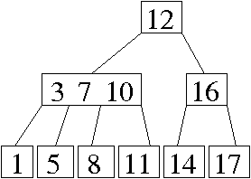
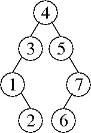
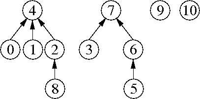

Problem 1. (9 points) A Miscellany.
b. Ω(log x + z2z + y2z log y).
c. Is is necessary to shrink the hash table when remove operations cause the load factor to become too small.
It is necessary because a hash table might grow very large when a lot of items are inserted; subsequently, most of those items might be deleted. Then the table might contain n entries but have an asymptotically larger number of buckets.
d. A method call might end, whereupon its stack frame is popped from the program stack. If some of the local variables in that stack frame are references, they are no longer included in the roots of the garbage collector. The objects they point to might thus no longer be live.
e. (2 + 8) / (7 / 3 ^ 4).
Problem 2. (7 points) Trees.
a. 
b. 
c. Perform a postorder traversal. When you visit a node, take the maximum of its children's heights and add one.
Problem 3. (10 points) Sorting.
a.
5 8 1 9 3 6 7
5 8 6 9 3 1 7
5 8 6 9 3 7 1
5 8 7 9 3 6 1
1 8 7 9 3 6 5
1 8 7 9 5 6 3
1 3 7 9 5 6 8
1 3 7 9 8 6 5
1 3 5 9 8 6 7
1 3 5 9 8 7 6
1 3 5 6 8 7 9
1 3 5 6 8 9 7
1 3 5 6 7 9 8
1 3 5 6 7 8 9
b.
in-place selection sort of an array:
Θ(bn + n2).
in-place insertion sort of an array:
Θ(bn2).
radix sort of a linked list using bucket sort:
Θ(bn / log n).
radix sort of an array using counting sort:
Θ(b2n / log (bn)).
c. Our parallel quicksort sorts n items in Θ(n) time, because its analysis is the same as that of sequential quickselect.
Problem 4. (8 points) Disjoint Sets.
a. 
b.
find(8)
union(7, 9)
union(7, 10)
union(4, 7)
find(2)
(The first three of these operations can occur in any order.)
c. The worst-case running time of Kruskal's algorithm (with radix sort) is Θ(v + e α(2e + v, v)) time.
d. The worst-case running time of u buggy union operations followed by f buggy find operations is Θ(min{u, f } u + f + u).
To create a bad example, first repeatedly unite a set with a sequence of one-item sets. Each time, the one-item set becomes the root. After u union operations, the tree is a chain of nodes whose height is u.
Next, repeatedly perform a find operation on the deepest leaf of the tree. Each time, the deepest leaf will become a child of the root, decreasing the tree's height by one. The first u find operations will cost Θ(u2) time total. (Additional find operations will cost only constant time each.)
e. The worst-case running time of u correct union operations followed by f buggy find operations is Θ(min{u, f } log u + u + f).
Recall the standard construction for creating the tallest tree with the smallest size possible under union by size. To create a tree of height h, you must unite a tree of height h – 1 with a tree of equal or larger size; so to increase the height by one you must double the size. Therefore, the smallest tree of height h has 2h nodes.
To create a bad example, use this construction and u union operations to create a tree with u + 1 nodes and height ⌊ log2 (u + 1) ⌋. Most of the nodes in this tree have a depth of Θ(log u).
Repeatedly perform a find operation on the deepest leaf of the tree. Each time, the deepest leaf will become a child of the root. The first u find operations will cost O(u log u) time total. (Additional find operations will cost only constant time each.)
Problem 5. (4 points) Graphs.
a. Yes. If several edges have the same weights, different sorting algorithms/implementations will put them in different orders. A graph can have more than one minimum spanning tree. The choice of minimum spanning tree that Kruskal's algorithm returns depends on the order in which it inspects edges of the same weight.
b. Recursive DFS does use a large auxiliary data structure—namely, the program stack.
c. Here are two algorithms. They're essentially equivalent, but one changes the graph, and one changes the BFS algorithm.
Change the graph: Add a new vertex, called the start vertex, to the graph. Attach it with edges to all the red vertices. Do a breadth-first search from the start vertex, and find the nearst green vertex. Use the parent pointers to find the shortest path from that green vertex back to the start vertex. This path will pass through a red vertex just before terminating at the start vertex; omitting the start vertex, this path is a shortest red-green path.
Change breadth-first search: Instead of starting breadth-first search by placing one vertex in a queue, start it by placing all the red vertices in the queue. Then run the BFS loop as usual. When you visit a green vertex for the first time, the parent pointers trace a shortest red-green path from that green vertex back to a red vertex.
Problem 6. (5 points) Range Queries.
a. Find the keys x and y, or keys close to them, by binary search.
Let ix be the index where the search for x ended. If the key stored at index ix is strictly less than x, increment ix by one. Now, ix is the number of keys strictly less than x.
Let iy be the index where the search for y ended. If the key stored at index iy is less than or equal to y, increment iy by one. Now, iy is the number of keys less than or equal to y.
Output iy – ix, the number of keys less than or equal to y that are not less than x.
b. Your “cheat sheet”: Create an (n + 1)-element array counts in which counts[i] is the number of keys strictly less than i, like counting sort does. Observe that counts[0] = 0 and counts[n] = n. This takes O(n) time.
To answer a query, return counts[y + 1] - counts[x].
c. A splay tree gives you the ability to insert and remove new keys quickly (i.e. much faster than linear time), then perform more fast range queries.
Problem 7. (7 points) A Binary Search Tree Rotation.
public void rotateRight() {
if (left != null) {
if (parent == null) {
myTree.root = left;
} else if (parent.left == this) {
parent.left = left;
} else {
parent.right = left;
}
left.parent = parent;
parent = left;
left = left.right;
if (left != null) {
left.parent = this;
}
parent.right = this;
}
}